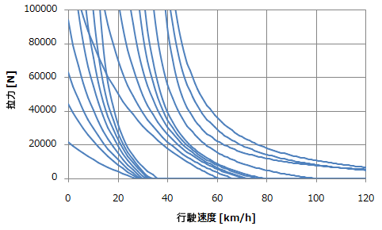
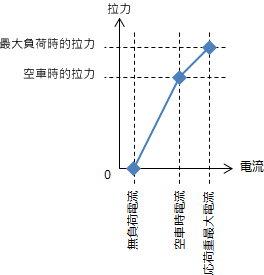

列車性能
Vehicle Performance
概要
Bve trainsim 中的列車性能，係以列車速度相對於拉力與電流的特性曲線來作出定義的。如果設定了多個特性曲線的話，當駕駛室控制桿位置的切換時特性曲線亦一併轉換。

| 補充 | 在 BVE Trainsim 4 及以前，無論駕駛室控制桿每一個位置只能對應一個特性曲線定義。而在 Bve trainsim 5 中，駕駛室不同的控制桿位置則能對應多個不限的特性曲線。通過改變控制桿的位置可換用不同的特性曲線，程式則會模擬該特性曲線的的特點，如正常制動及抑速制動等。 |
多個性能曲線可被同時寫入到一個檔案內。而此檔案則稱為列車性能表檔案。你必須為每個動力桿格數與制動桿格數定義至少一個列車性能表檔案，詳見下表。各列車性表則可經由列車性能表參考檔案中載入。
| 名稱 | 說明 |
| 拉力表 (空車) | 空車時的拉力*1 |
| 拉力表 (応荷重最大) | 負載補償制動時的最大拉力*1 |
| 電流表 (空車) | 空車時摩打的電流*1 |
| 電流表 (応荷重最大) | 負載補償制動時摩打的最大電流 *1 |
| 電流表 (無負荷) | 拉力為 0 時時摩打的最大電流 |
| 階段進行屬性表 | 用於切換特性曲線的條件屬性。只有該表格不對應速度的特性曲線。 |
當下列行為之一作用時，程式會使用到列車性能表檔案中電流表和牽印力表的值。

列車性能文件
Vehicle Performance File
記述格式
設定列車性能表檔案的相對路徑。
| [Power] | 動力設定 |
| Force = file | 拉力表（空車） |
| MaxForce = file |
拉力表（負荷最重時） |
| Current = file | 電流表（空車） |
| MaxCurrent = file | 電流表（負荷最重時） |
| NoLoadCurrent = file | 電流表（無負荷時） |
| Params = file |
階段進行屬性表 |
| [Break] | 電力制動設定 |
| Force = file | （以下設定方法與動力設定相同） |
| MaxForce = file |
|
| Current = file | |
| MaxCurrent = file | |
| NoLoadCurrent = file | Params = file |
© 2012 mackoy